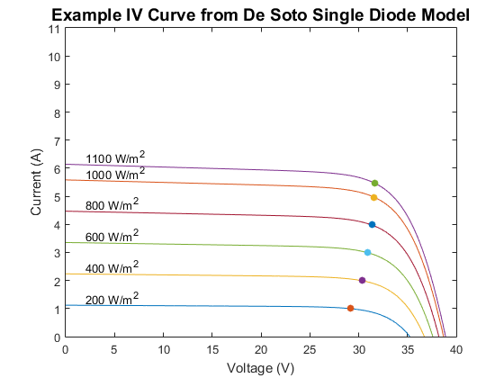
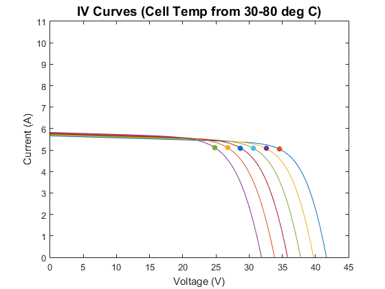

pvl_calcparams_desoto
Calculates five parameters to compute IV curves using the De Soto model [1].
Contents
Syntax
- [IL, I0, Rs, Rsh, nNsVth] = pvl_calcparams_desoto(S, Tcell, alpha_isc, ModuleParameters, dEgdt, EgRef)
- [IL, I0, Rs, Rsh, nNsVth] = pvl_calcparams_desoto(S, Tcell, alpha_isc, ModuleParameters, dEgdt, EgRef)
- [IL, I0, Rs, Rsh, nNsVth] = pvl_calcparams_desoto(S, Tcell, alpha_isc, ModuleParameters, dEgdt, EgRef, Sref)
- [IL, I0, Rs, Rsh, nNsVth] = pvl_calcparams_desoto(S, Tcell, alpha_isc, ModuleParameters, dEgdt, EgRef, Sref, Tref)
- [IL, I0, Rs, Rsh, nNsVth] = pvl_calcparams_desoto(S, Tcell, alpha_isc, ModuleParameters, dEgdt, EgRef, 'Sref', Sref, 'Tref', Tref)
Description
Calculates IL, I0, Rs, Rsh, and a according to the model in [1]. The results can be used in the single diode equation to determine IV curves at irradiance S and cell temperature Tcell.
Inputs
- S - The effective irradiance (in W/m^2). S must be 0. May be a vector of the same size as Tcell. Due to a division by S in the script, any value equal to 0 will be set to 1E-10.
- Tcell - The average cell temperature of cells within a module in C. Tcell must be -273.15. May be a vector of the same size as S.
- alpha_isc - The short-circuit current temperature coefficient of the module in units of 1/C.
- ModuleParameters - a struct with parameters describing PV module performance at reference conditions according to [1]. Parameters may be generated or found by lookup. For ease of use, a library of parameters may be found within the System Advisor Model (SAM) [2]. The SAM library has been provided with PV_LIB (\Required Data\CECModuleDatabaseSAM2012.11.30.mat) which may be read by pvl_SAMLibraryReader_CECModules. The ModuleParameters struct must contain (at least) the following five fields:
- ModuleParameters.a_ref - modified diode ideality factor parameter at reference conditions, a_ref can be calculated from the usual diode ideality factor n, number of cells in series Ns, and cell temperature Tcell per equation (2) in [1].
- ModuleParameters.IL_ref - Light-generated current (or photocurrent) in amperes at reference conditions. IL is referred to as Iph in some literature.
- ModuleParameters.I0_ref - diode reverse saturation current in amperes, at reference conditions.
- ModuleParameters.Rsh_ref - shunt resistance at reference conditions (ohms)
- ModuleParameters.Rs_ref - series resistance at reference conditions (ohms)
- EgRef - The energy bandgap at reference temperature (in eV). 1.121 eV for silicon. EgRef must be >0.
- dEgdT - The temperature dependence of the energy bandgap at SRC (in 1/C). May be either a scalar value (e.g. -0.0002677 as in [1]) or a vector of the same legnth as Tcell (e.g., if dEgdT is a function of temperature).
- Sref - Optional reference irradiance in W/m^2. If omitted, a value of 1000 is used.
- Tref - Optional reference cell temperature in C. If omitted, a value of 25 C is used.
Outputs
- IL - Light-generated current in amperes.
- I0 - Diode saturation curent in amperes.
- Rs - Series resistance in ohms.
- Rsh - Shunt resistance in ohms.
- nNsVth - modified diode ideality factor. Note that in [1] nNsVth = a (equation 2). nNsVth is the product of the usual diode ideality factor n, the number of series-connected cells in the module Ns, and the thermal voltage Vth of a cell in the module at a cell temperature of Tcell.
Notes
If the reference parameters in the ModuleParameters struct are read from a database (e.g. the SAM module database), it is important to use the same values for EgRef and dEgdT that were used to generate the reference parameters, regardless of the actual bandgap characteristics of the semiconductor. For example, in the case of the System Advisor Model library, created as described in [2], EgRef and dEgdT for all modules were 1.121 eV and -0.0002677 eV/K, respectively.
Example 1
IV curves at a range of irradiance values
Ee = [200 400 600 800 1000 1100]; % effective irradiance Levels (W/m^2) for parameter sets Tcell = 45; %deg C load('CECModuleDatabaseSAM2014.1.14.mat') % Yingli Energy (China) YL295P-35b # 9764 Module = CECModuleDB(9764); % Bandgap and Bandgap temperature dependence from [2] EgRef = 1.121; %Reference band gap. C = -0.0002677; %Band gap dependence on temperature. [IL, I0, Rs, Rsh, a] = pvl_calcparams_desoto(Ee, Tcell, Module.alpha_sc, Module, EgRef, C); NumPoints = 1000; [IVResult] = pvl_singlediode(IL, I0, Rs, Rsh, a, NumPoints); figure for i=1:6 plot(IVResult.V(i,:),IVResult.I(i,:)) hold on scatter(IVResult.Vmp(i),IVResult.Imp(i),'filled') text(2,IVResult.Isc(i)+0.3,[num2str(Ee(i)) ' W/m^2']) end xlabel('Voltage (V)') ylabel('Current (A)') title('Example IV Curve from De Soto Single Diode Model','FontSize',14) ylim([0 11])
Example 2
IV curves at a range of cell temperature values and at AM = 3
S = 1000; %broadband irradiance Levels for parameter sets Tcell = [30 40 50 60 70 80]; %deg C AMa = 3; % Absolute (pressure corrected) airmass % Bandgap and Bandgap temperature dependence from [2] EgRef = 1.121; %Reference band gap. C = -0.0002677; %Band gap dependence on temperature. % Representative coefficients for estimating M/Mref for Poly-crystalline Si % From Table A.1 in [1]. M = polyval([-0.000126 0.002816 -0.024459 0.086257 0.918093], AMa); Ee = S.*M; [IL, I0, Rs, Rsh, a] = pvl_calcparams_desoto(Ee, Tcell, Module.alpha_sc, Module, EgRef, C); NumPoints = 1000; [IVResult] = pvl_singlediode(IL, I0, Rs, Rsh, a, NumPoints); figure for i=1:6 plot(IVResult.V(i,:),IVResult.I(i,:)) hold on scatter(IVResult.Vmp(i),IVResult.Imp(i),'filled') end xlabel('Voltage (V)') ylabel('Current (A)') title('IV Curves (Cell Temp from 30-80 deg C)','FontSize',14) ylim([0 11])
References
- [1] W. De Soto et al., "Improvement and validation of a model for photovoltaic array performance", Solar Energy, vol 80, pp. 78-88, 2006.
- [2] A. Dobos, "An Improved Coefficient Calculator for the California Energy Commission 6 Parameter Photovoltaic Module Model", Journal of Solar Energy Engineering, vol 134, 2012.
See also
pvl_singlediode, pvl_SAMLibraryReader_CECModules
Copyright 2014 Sandia National Laboratories